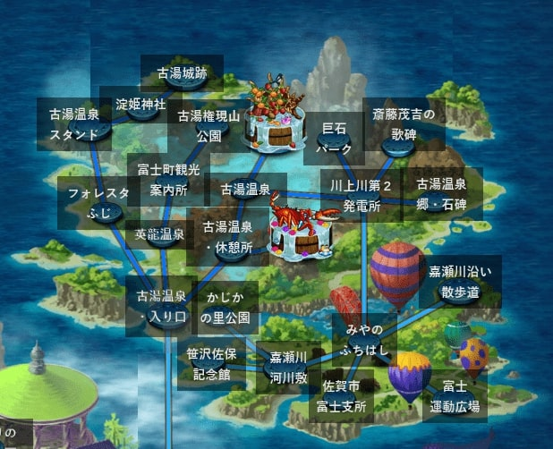

古湯温泉エリア
ホーム > ロマサガＲＳ > ロマサガＲＳ佐賀コラボ_2021年 > 古湯エリア7/29～7/30 古湯温泉エリア
次は古湯温泉エリアです。対象のマップは以下。

このエリアのボスは「アラクーネ」と「樹の将魔」でした。
竹崎かに（アラクーネ）
アラクーネは「竹崎かに軍団」という技を使ってきました。
去年はクジンシーが竹崎かに担当でしたね。
竹崎カニは、太良町の観光情報サイトで紹介されています。
有明海の干満の差でできる広大な干潟に棲むプランクトンや小動物は充分に日光を浴びて育っており、それを食べる竹崎カニはそれゆえに格段に美味であると言われています。一度でいいから食べてみたいですね！
※写真は太良町の観光情報サイトより抜粋
カササギ（樹の将魔）
樹の将魔は「紅葉の息吹」という自己バフ技を使ってきました。
樹の将魔に上に乗ってる鳥は、佐賀の県鳥カササギです。


写真は公式サイト カササギ（カチガラス）の紹介より抜粋
原作の樹の将魔はこんな感じでした。

世界の合言葉は森！
原作の樹の将魔は少し涸れたような色をしています。原作では「紅葉の舞い」という技を使うことから、秋の紅葉のイメージなんでしょう。
一方、ロマサガRSの樹の将魔は、実がなっているように見えますね。佐賀の果物の特産品と言えばいちごとみかんです。佐賀の特産品がなっているんですね！
※画像は佐賀県 佐賀の果物より抜粋。
参考
その他古湯温泉エリア関連情報
嘉瀬川ダム
Loading画面の一つになっていた嘉瀬川ダムです

嘉瀬川ダムは↓ここです。興味ある方は Google Map で散策してみてはいかが。
鶴霊泉（かくれいせん）
これは「鶴霊泉」という温泉宿です。

公式サイトの写真はこちら。

※写真は鶴霊泉 公式サイトの温泉紹介ページより抜粋
メチャクチャ綺麗ですね！！！！行きたい、これは行きたいよ！！！！
鶴霊泉 公式サイト TOPページ
宮の淵橋
宮の淵橋（みやのふちはし）です
Loading画面には、「ロケ地：川沿いの小径（古湯エリア）」と書いてあります。真ん中左に赤い橋が見えますね。古湯エリアにある橋と言えば、制圧戦のマップでは「みやのふちはし」という場所があります（下図参照）（みやのふちはしは漢字だと「宮の淵橋」）。赤い橋も書き込まれています。
宮の淵橋の実際の写真はこんな感じ
昭和初期まで屋形舟が浮かんでいたという、ここ「宮の淵(みやのふち)」。
— 泊まれる図書館 暁／佐賀・古湯温泉 (@_akazki) November 22, 2017
自然あふれる古湯温泉の中でもぜひ散策していただきたいポイントです。
木々の緑と赤い橋が印象的な、美しい光景にひたってみてはいかがでしょうか。
★一晩中、本を読みたい時は図書館に泊まれます→https://t.co/IDRN5IakaE pic.twitter.com/S4tVALELdu
Google Mapで見るとこれ。Google Mapなのでちょっと移動してみればわかると思いますが、Loading画面の橋と似ているのでまあこれのことなんでしょうね。
木漏れ陽
次は「木漏れ陽」です。
木漏れ陽はソバ屋さんです。ソバの実から自家農園で栽培している点で他店と一線を画しているらしい。

※画像はたびらい 木漏れ陽（こもれび）／三瀬（佐賀観光情報）より抜粋。
古湯温泉足湯
エミリアのスタイル絵が古湯温泉の足湯に入ろうとしている絵でした。

ちょっと自信ないですけど、古湯温泉エリアの足湯・・・↓これかな？
こんな街中にあるんですねー。
参考
熊の川湯温花火大会
ナカジマ零式が古湯・熊の川湯温花火大会に関する技を持っていました。
残念ながら、古湯・熊の川温泉花火大会は2020年、2021年は中止になってしまったようです。
参考：じゃらん 古湯・熊の川温泉花火大会
ちょっと古いですが、2014年の花火大会の様子がyoutubeに公開されていたので張っておきます。
参考
バルーンフェスタ
制圧戦マップに気球が飛んでいる場所がありますね。
佐賀県では毎年「佐賀インターナショナルバルーンフェスタ」というイベントが開催されています。
去年はワグナスがバルーンフェスタ担当でした。
写真はこちら
アンサガのルビィのスタイル絵は気球に乗っている絵ですね。よく見ると後ろにゆきだるまと赤かぶがいます。
また、「バルーンギフト」という技を持っていましたが、これもバルーンフェスタ関係ですね。「もっと上よ、上！」というセリフは気球でもっと上に行けってことですね。
参考
古湯温泉エリアは以上です。よろしければ他のエリアも是非見てみて下さい。
- 2021年佐賀コラボトップ
- 始まりの湯エリア
- 古湯温泉エリア（今ここ）
- 嬉野温泉エリア
- 武雄温泉エリア
- その他